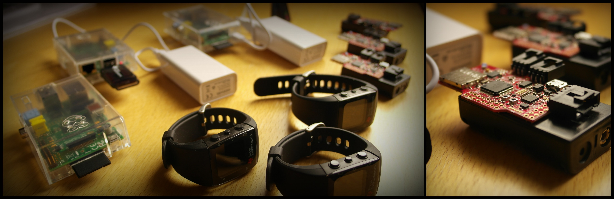
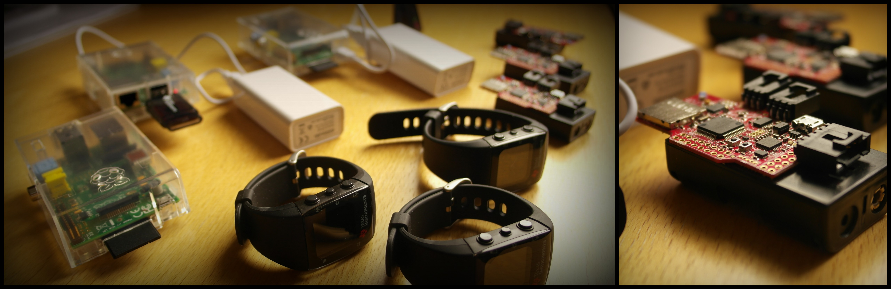

Blue print project
Take your health in hand
 

Blue print в кількох словах
Здоров’я є нашим найціннішим, але також найвразливішим даром. І справді, ніхто не застрахований від раптового погіршення стану здоро’я. Наведемо кілька прикладів: захворювання серця стають причиною 25% від загальної смертності, а також, щороку кожна третя літня людина віком більше 65 років є жертвою падіння. (джерело: Центр Контролю за Хворобами, 2010). Такі випадки дуже тяжко передбачити наперед, навіть під час регулярних медичних обстежень, та вони можуть спричинити серйозні і невиправні наслідки для вашого здоров’я.
Проте, прості звичайні заходи можуть допомогти вам повернути життя до рук, а також передбачити та попередити потенційно загрозливі події. Ненав’язливий моніторинг кількох життєвих показників, спостереження за стилем життя та щоденною активністю або ж звичайні відповіді на питтання можуть бути достатніми для попередження та вчасно вирішити більшість із зазначених критичних ситуацій. В такому контексті, був створений проект Blue print, ціллю якого є допомогти вам взяти здоров’я в свої руки та крок за кроком зменшити загрози ризику.
Для кого існує Blue print
Осіб, які шукають спосіб стежити за власним здоров’ям та покращити його функціонування, опираючись на зібрані дані та відповідні поради.
Осіб із групи ризику, які хочуть знизити його рівень, адаптуючи їхній стиль життя та попередити критичні (загрозливі) ситуації.
Для медичних послуг, спрямованих на віддаленний моніторинг пацієнтів, з метою доповнення медичних даних від попередніх медичних оглядів, або для наукових досліджень.
Компаній медичного сектору, що досліджують та розвивають нові медичні технології опираючись на життєві показники пацієнтів та особисті дані їхнього способу життя і середовища.
Blue print це також:
- # Відкритий проект. Весь загал кодів доступу та документації, пов'язаних з даним проеком, є відкритим для доступу та безкоштовним.
- # Велика кількість неінвазивних рішень, відкритих для змін та пристосувань, вільних у доступі, що спрямовані на медичне спостереження та аналіз даних.
- # Професіонали своєї справи, що пропонують на розгляд суспільства ефективні знаряддя для покращення вашого здоров'я
News
September 2014: Field trials begin in France and Norway.
August 2014: Pilot demonstrator of the smart-watch life-logging system released.
Follow us!
Send us an email with your comments or subscribe to our newsletter to get the latest scoop right to your inbox.